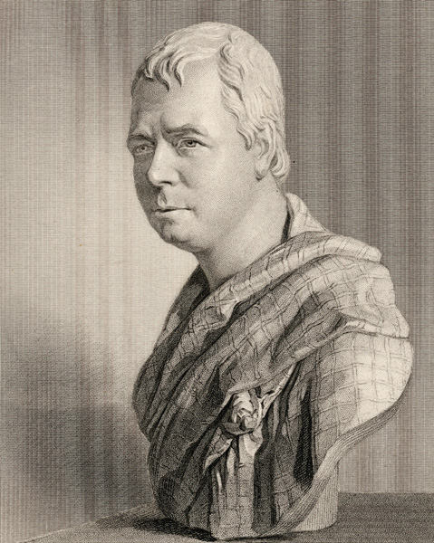

<< Back

Holl's engraving was first published in vol. VII of The Gallery of Portraits: With Memoirs (London: Charles Knight, 1833-37), generally known as Knight's Gallery of Portraits. It is taken from the marble replica of Chantrey's bust at Abbotsford.